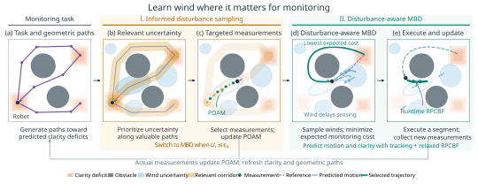

Loading simulations…
1 Department of Robotics, University of Michigan, Ann Arbor2 Embry-Riddle Aeronautical University3 Department of Aerospace Engineering, University of Michigan, Ann Arbor
The idea
Robots performing persistent monitoring must revisit regions as information decays. Wind can delay or deflect a planned route, so a short path can deliver poor monitoring performance.
We use geometric alternatives and predicted clarity deficits to identify where wind knowledge matters. The robot first gathers measurements along relevant paths. Once weighted uncertainty is sufficiently low, disturbance-aware model-based diffusion (MBD) plans monitoring trajectories by predicting motion and sensing under sampled wind fields.
How it works
Sensing continues during both wind learning and monitoring.

Predict future clarity deficits and retain routes through different passages.
Conceptual illustration. Blue predictions show how wind changes motion; the teal alternative is selected for lower expected monitoring cost. View the animated GIF ↗
Experiments
Five methods in each environment. The shared comparison time includes wind learning; use the GIF or slider controls to inspect each run.
Loading simulations…
The same recordings, in 3D
The saved planar trajectories are replayed at a fixed display height. Moving tracers use each scenario’s stationary CFD wind field; the architecture is illustrative.
The recorded trajectories in an industrial courtyard, with moving tracers from the saved stationary wind field. Select any method and replay its wind-learning and monitoring stages.
Open the 3D view in a full window ↗The same courtyard layout as Scenario 1, with the recorded strong wind in both the central and lower passages. The upper route remains sheltered.
Open the 3D view in a full window ↗A glazed pavilion sits within the upper monitoring plaza. The recorded strong wind lies in the lower-right forecourt, away from the main monitoring region.
Open the 3D view in a full window ↗Workshops and storage tanks form a utility campus. The monitoring bays sit on the west side, while the larger eastern service yard adds space that need not be fully surveyed.
Open the 3D view in a full window ↗